A lot more people are hearing about cryptocurrency and about others that have bought it. This website is here to help you understand how you can buy cryptocurrency easily as many people may have heard about it but are unsure how to buy it and do it safely.
The easiest way to buy some cryptocurrency would be to use coinbase. Its very popular and even has an app you can download for you phone or tablet allowing you to buy directly from your phone or tablet. It also will allow you to monitor your cryptocurrency you own so you can check what your current portfolio balance and also view all the prices of the cryptocurrency that are on Coinbase.
The nice thing about coinbase is its been around since 2012 and since then has been improved over the years. One of the problems with it in the past for people in the UK was transfering and withdrawing money as it always had to be converted to Euros. Now it is far more simple as they have a GBP wallet on coinbase meaning you can transfer money directly to and from your coinbase account.
With coinbase there are a couple of option for buying cryptocurrency. The quick way is to just use your bank card to instantly buy cryptocurrency. This is really great but the downside is it can be expensive as there are fees each time you buy. The good news is you can do a bank transfer to your coinbase account which is free. The only downside is that this is not instant as you may have to wait up to 2 days for it to reach your account and only then you will be able to use that money to purchase some cryptocurrency.
As I mentioned above, coinbase is a great way to buy cryptocurrency. Its easy and you can download the app on your device so you can access your account at any time you want. Coinbase has some of the top cryptocurrencies.
The cryptocurrencies that you can buy on Coinbase are:
Binance is also one of the most popular cryptocurrency exchanges. The advantage of this exchange is the vast amount of different cryptocurrencies avaiable to buy. There are far more available than on Coinbase. At one time there were not many cryptocurrencies around but now there are a huge amount of different ones that you can invest in. There are quite a few top cryptocurrencies out there that are no on Coinbase which you can purchase on Binance
Such as:
Those are just some of top ones that are popular at the time of writing this. There are many others on Binanace to choose from though. I would suggest doing some good research on all the different ones available though and making your own decisions on which ones you think are worth buying.
The best place to start would probably be to just buy on coinbase to get started as its easy to do and you can always move your coins to other exchanges later on which you can then sell and use to buy other cryptocurrency.
On coinbase the first thing you would need to do is set an account up and verify it before you can purchase anything. This is normal procedure and is just to prevent fraud. It also adds an extra layer of security by ensuring no one but you links your payment information such as your bank account or credit/debit card.
All you need is some valid ID such as a current passport or drivers licence.
Below is the link to the coinbase information on verifying your account!
Official Coinbase account verification information
Once your account has been verified you are ready to buy some cryptocurrency. Before you do this you might want to do some reseach into what would be a good choice. When you have decided what you would like to buy, the quickest way would be to buy using your bank card.
To buy you need to click the 'buy/sell' link at the top of the page.
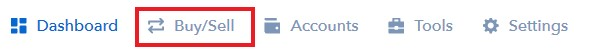When you click the link you will be taken to the page where you can choose to buy cryptocurrency. If you want to buy using your bank card you will need to link your card to your account first before you can make a purchase.
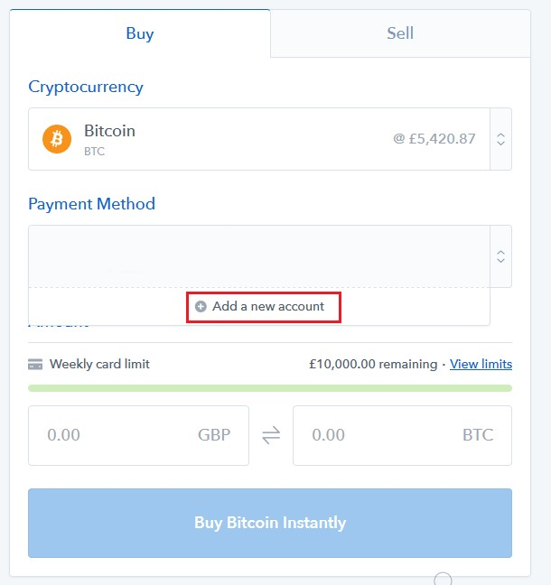When you click the 'Add a new account' button it will open a new window and you want to select the 3D secure credit card option.
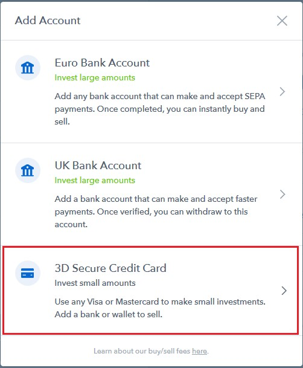When you click it you will be asked for the details and once you have done that it will have linked your card to your account which you will be then be able to select.
Now you have your card linked, all you have to do is select the cryptocurrency you want to buy in the drop down menu.
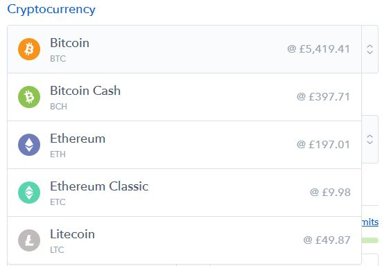When you have selected the one you want to buy then you need to just put in the amount you want to spend on the cryptocurrency and it will tell you exactly how much you can buy at the current market price. You can choose to spend a certain amount like in the picture below I just typed in 100GBP worth.
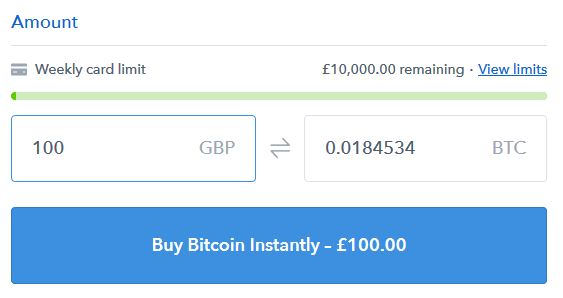On the right of the screen you will see some details on how much cryptocurrency you are buying, the coinbase fee and the total amount of money you are spending.
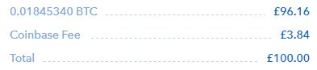If you wanted to you can also type in an amount of cryptocurrency you wish to buy. For example you might just want to buy 1 bitcoin, so you would just type in '1' in the box on the right and it will then give you the cost of 1 bitcoin or however much you are wanting to buy in the box on the left.
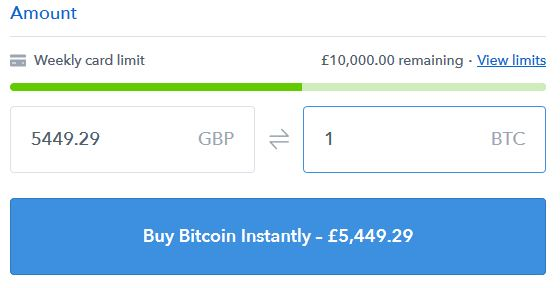It is important to understand how to move cryptocurrency around, if that is sending it from one exchange to another, sending it to another person or sending it to a wallet.
If you have bought some on Coinbase and you want to buy something that is not on Coinbase you might want to send what you have on Coinbase to another exchange that has the cryptocurrency you want to buy
As I have said previously, it would be nice to start off just buying something on Coinbase. Once you have some of the cryptocurrency's on Coinbase you can always send it to another exchange
For example, you may want to send it to binance where you can then use it to buy any of the other cryptocurrenies on that exchange
To send from one exchange to another one, for example sending from coinbase to binance is quite easy but can be a bit confusing and scary for the first time.
The first thing you will need to do is click on "accounts" at the top of your coinbase.
When you click the accounts tab you will get a list of the different cryptocurrencies and will have the option to send or receive. As I'm showing how to send to another exchange such as binance, you will need to click the send button under which ever cryptocurrency you are holding on Coinbase that you want to send to Binance.
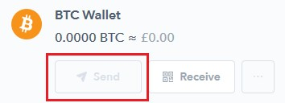The send button will be greyed out if you do not have any cryptocurrency of the type you are trying to send like in the example above but you should be able to click it as long as you have some cryptocurrency in the wallet that you want to send from.
When you click send it will open a box that you need to fill in with the address you are sending to and the amount you want to send!
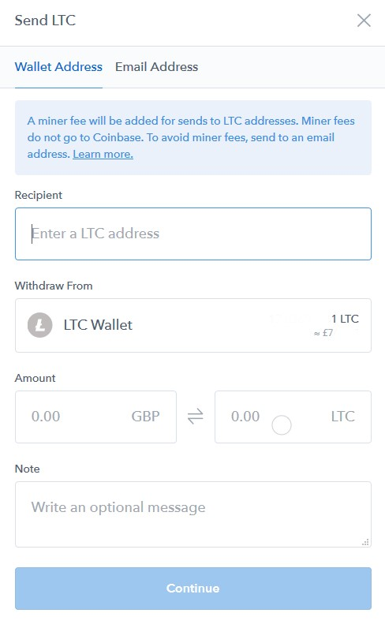To get the recipient address(your Binance wallet address). You will need to log into your Binance account and at the top right you need to go to the funds tabs and then click on deposits in the drop down menu
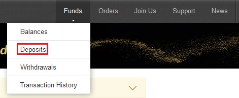You will be then taken to a page where you can select what you are depositing into your Binance account. You can type in the cryptocurrency you are sending or try to find it in the drop down menu. For this example I'm showing how you would send litecoin so I need to select litecoin.
When you have selected the cryptocurreny you are sending you will be taken to a page that has the recipient address. I have highlighted the address in the red box. This is the address you need to put into Coinbase when you are sending your cryptocurrency. I suggest copy and pasting it but you should make sure that you double check that you have copy and paste the correct address otherwise you might end up sending it somewhere else and again you could then have lost it.
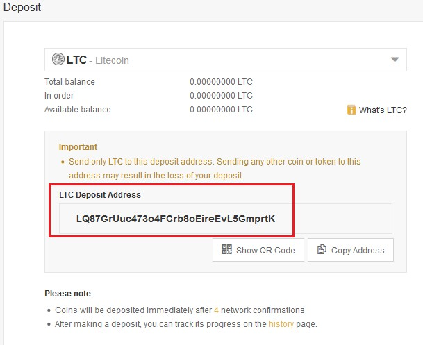Once you have copied it from Binanace then go back to your Coinbase account where you are sending it and like I said, just paste it into the box and double check the address is correct. Then of course you will need to choose how much you are sending so either put in the amount you want to send in your countries currency or the amount of cryptocurreny you want to send.
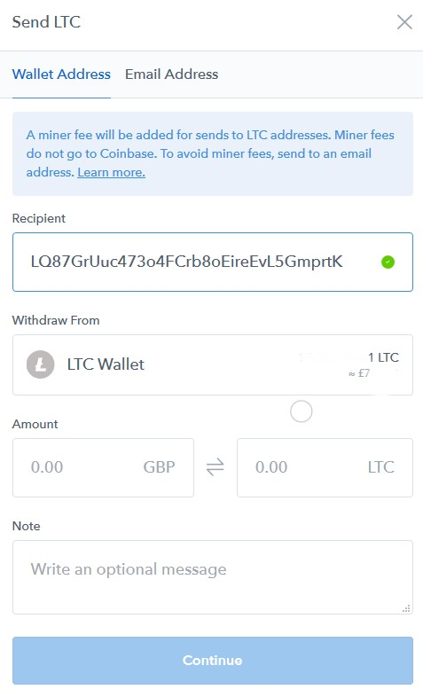When you have sent the cryptocurreny from your coinbase account to your Binance account it will take a short amount of time for it to send. You can check the status of your pending deposits by going to the top right of of the screen on your Binanace account and clicking on funds and then clicking on transaction history from the drop down menu.
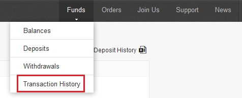You will then see a page where you can view the deposits to see your pending deposits and also view your withdrawal history!
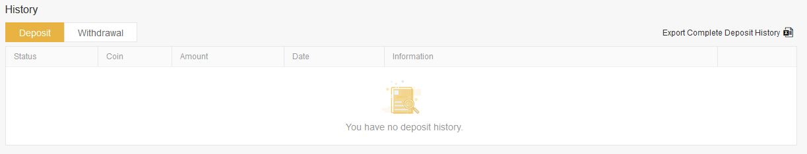